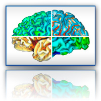
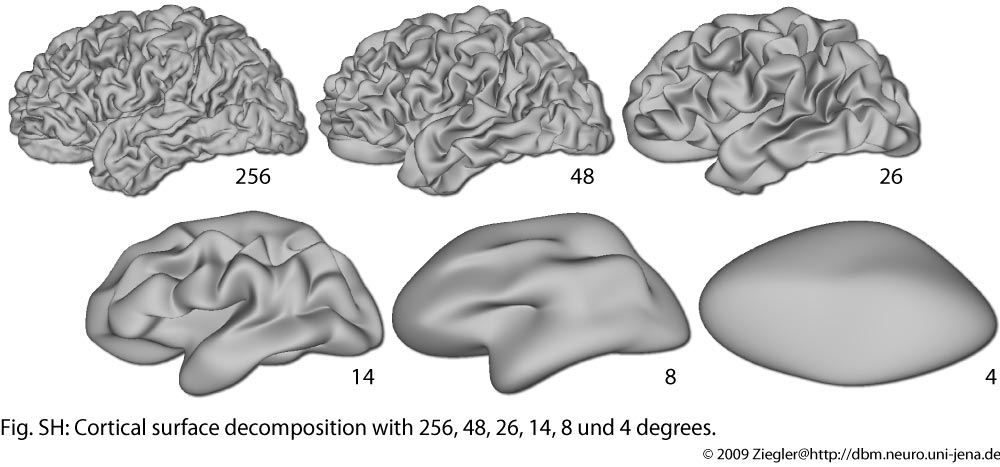

Brains are constantly changing in response to internal and external stimuli. While most of these changes simply reflect normal development and learning, others can lead to brain diseases or adverse aging processes. Helping people cope with the latter changes is one of the central motivations for research in neurology and psychiatry. However, many aspects of brain structure and function and their interactions-from the molecular to the cognitive and sociological levels-have not yet been sufficiently explored to provide a clear biological framework on which clinicians can base their diagnoses and therapeutic decisions. As a result, many neuropsychiatric disorders still lack promising therapies, and quite a few remain difficult to diagnose.
Brains are constantly changing in response to internal and external stimuli. While most of these changes simply reflect normal development and learning, others can lead to brain diseases or adverse aging processes. Helping people cope with the latter changes is one of the central motivations for research in neurology and psychiatry. However, many aspects of brain structure and function and their interactions-from the molecular to the cognitive and sociological levels-have not yet been sufficiently explored to provide a clear biological framework on which clinicians can base their diagnoses and therapeutic decisions. As a result, many neuropsychiatric disorders still lack promising therapies, and quite a few remain difficult to diagnose.
Our group focuses on quantifying macroscopic structures in the brain and classifying their changes, especially in the early stages of neuropsychiatric disorders such as schizophrenia or Alzheimer's disease. All these findings can be considered as a contribution to a coherent theoretical framework for brain changes over time and across levels of biological organization.

Methods for structural brain imaging
The development of algorithms and tools for processing of voxel- and surface based imaging data encompasses segmentation, surface reconstruction, correction of topology artifacts and conformal mapping.

Schizophrenia research
Voxel- and surface based imaging data provide insight into abnormal brain development for certain diseases. The study of morphological differences between healthy subjects and schizophrenic patients might help to clarify the mechanism and progression of the underlying alterations in brain development.

Gyrification and cortical measures
To study inter-individual differences in brain structure, we intend to develop, improve, or use pre-existing local and global brain measures. Some such measures have recently emerged in the field of magnetic resonance brain imaging, including sulcal depth, cortical thickness, and local gyrification indices.

Schizophrenia research
Structural brain imaging data can be used to predict the group membership (such as gender or disease) of unknown individuals. Several multivariate analysis and machine learning techniques give a solution for this classification problem. Our emphasis is the application of kernel methods and support vector classification.

Gyrification and cortical measures
We use structural MRI data to investigate age-related (i.e., ontogenetic) changes of brain morphology and also their phylogenetic variation between species.

Surface shape analysis
The reconstructed cortical surfaces and its shape properties are analyzed with methods of spherical harmonic decomposition.
Methods for structural brain imaging
Magnetic resonance imaging (MRI) is a way to visualize spatial information about macroscopic ensembles of atomic nuclei, typically the distribution of 1H nuclei within a patient lying in a clinical scanner. Image contrast can be generated in a variety of ways that highlight different properties of these nuclei (e.g., their density, their interaction with electromagnetic fields, their chemical environment, or their diffusion or flow), averaged over small volume elements of the brain, typically with a resolution of 1 cubic mm. Most of the morphometric tools we use and develop were optimized for data obtained by means of T1-weighted MP-RAGE sequences.
The cerebral cortex is a highly folded sheet of gray matter (GM) that lies inside the cerebrospinal fluid (CSF) and surrounds a core of white matter (WM). To analyse cortical structures, it is necessary to remove non-brain tissue and to classify the remaining tissue into GM, WM, and CSF. This early processing step of structural MRI data is called tissue segmentation. A sub-segmentation into the left and right hemisphere and the removal of the brainstem is also necessary.

The tissue segmentation result is used to create a mesh representing the GM sheet. An analogy for the GM sheet is a collapsed balloon. There are two ways to reconstruct it. The first one starts with a fully inflated balloon and changes the surface of the balloon to match the cortical structur (a deformable surface or top-down approach). The second way to reconstruct the surface is based on the tissue map (a bottom-up approach), which tends to produce a more accurate surface reconstruction.
The central surface (CS) of brain cortex may have some analytical advantages compared to boundary surfaces between the gray matter (GM) and either the white matter (WM) or cerebrospinal fluid (CSF). Since the regions between two gyri are often blurred in the segmentation result due to the partial volume effects, it is necessary to reconstruct these regions. We have developed different voxel- and surface-based methods that primarily use distance-based information to reconstruct an accurate CS.
Because we use a bottom-up approach, the reconstructed surface has some topology errors. Noise and partial volume effects lead to mis-classification of brain tissue. These processing errors are visible as bridges between gyri or holes within a gyrus. Because the brain surface has the same shape as a strongly folded balloon, we can remove these defects using topology correction methods.

A common processing step for cortical surfaces is to map the cortical surface mesh to a spherical surface for improved brain registration and advanced analytical techniques. The ideal spherical mapping is isometric - all angles and areas are preserved. Such a mapping potentially improves the quality of subsequent processing steps. However, there is a trade-off between angle and area distortion when mapping the cortical surface to a sphere. Our lab has developed a fast new method to generate a pseudo-isometric spherical mapping of the cortical surface. The initial spherical map is a conformal map produced via the Laplace-Beltrami operator optimized with a Möbius transformation (in figure, LB). The conformal map is then post-processed using a processing pipeline consisting of in-house algorithms designed to reduce area distortion (in figure, Iso). The spherical maps generated using our method have low area and angular distortion.

Schizophrenia research
Schizophrenia is a complex disorder. The cause of schizophrenia lies in a complex interaction between genes and environment. Genetic variation could lead to altered brain structure and/or function. These changes could predispose a person to developing schizophrenia in the face of environmental stressors. MRI of the brain provides a way to detect changes in brain structure due to genetic effects and those due to disease progression.
Patients with schizophrenia have reduced grey matter volume and altered white matter connections. Some of these changes could have a genetic basis. Voxel based morphometry provides an unbiased whole brain approach to explore effects of genetic polymorphisms on grey matter and white matter volumes in schizophrenia.
Formation of gyri and sulci begin at the age of 16 weeks in utero in humans. Genetic variation may affect rates of grey matter and white matter development thus affecting formation of gyri. As some genes implicated in schizophrenia affect the development of the brain, these may result in abnormal gyrification. Measuring cortical gyrification in healthy twins and twins discordant for schizophrenia (i.e., one twin has schizophrenia while the cotwin is healthy) can help us differentiate between genetic effects and disease effects on cortical gyrification in schizophrenia.
Gyrification and cortical measures
There are a variety of morphometric measures to describe the cortex, such as thickness, area, volume, and curvature. In our lab, we focus on local, surface-based methods.
The cortical thickness measure can be applied to studies of Alzheimer’s dementia, schizophrenia, brain development, and aging. The fundamental problem is that there are different approaches to estimating cortical thickness, which produce significantly different results. Thickness measurement methods can be divided into three categories: voxel-, surface- and gradient-based. The estimation of cortical thickness is part of our central surface reconstruction process.
The brain surface in healthy human adults is normally highly convoluted, with ridges (gyri) and faults (sulci). Gyrification refers to both this folding process and quantitative measures thereof. Given that abnormal gyrification patterns have been found in patients with schizophrenia and other neuropsychiatric disorders, we develop methods, based on structural MRI scans, to measure gyrification automatically on both local and whole-brain levels. We hope that these methods may eventually contribute to an earlier diagnosis and for monitoring patients during the therapeutic phase. The gyrification of the the cortex can be measured by curvature, as a relation between different cortical surfaces for the global brain, or as the relation between the curves of these surface in a slice.
The depth of sulci can be measured based on a hull surface which surrounds the whole brain and gives additional information on the convolution of the brain. Like thickness measures, sulcal depth also allows different definitions.
Classification of brain structure
The major concern of classification methods in psychiatric imaging context is the separation of groups (e.g., patients and controls) based solely on structural properties of the brain. For this purpose, our group uses algorithms from the field of machine learning, such as support vector machines (SVM). These techniques estimate borderlines for multidimensional brain attributes in direct comparison of two or more groups. In many cases, predicting the group membership of further (previously unclassified) individuals can be accomplished with a high degree of accuracy. Validation of predictions with SVMs can be done using a leave-one-out cross-validation method. The mean of all resulting accuracies (each subject is left out once) is a measure of goodness of the prediction in this sample. Testing the ‘trained machine’ on new sample data is required for generalization on a broader population of subjects. One aim of this classification procedure is to support objective diagnoses of certain psychiatric and neurological diseases.
Development and evolution
Neuropsychiatric diseases like schizophrenia are the result of processes acting on time scales of both an individual’s lifetime and our species’ history. For this reason, insights into human brain development or brain evolution in general can also help to elucidate related aspects of brain disorders. Specifically, the mammalian brain is characterized by a six-layered cerebral cortex which folds up with increasing brain size. Abnormalities in the thickness and folding of the cerebral cortex have been observed in patients with schizophrenia, autism, William’s syndrome, and other medical conditions. We therefore investigate the common principles underlying these processes by quantifying brain shape, both in humans (particularly children) and across species (particularly other primates) on the basis of data obtained with Magnetic Resonance Imaging.
Surface shape analysis
The analysis of brain surface is a special case of studying structural properties of objects with closed surfaces. One basic approach for such a surface analysis is the decomposition of the x, y, and z coordinate functions of a given surface (e.g., the grey matter surface). Analogous to 2D Fourier transforms of images, linear combinations of basis functions, called spherical harmonics, can be used to deconstruct the surface into its frequency components. After finding a spherical parametrization of the surface (for instance, via conformal mapping), a spherical harmonic transform is applied to each coordinate function of the original surface mesh. The resulting spherical harmonic coefficients contain information about the spatial frequency components of the analyzed brain surface. One important question is how these harmonic representations can be used to analyze developmental and clinical differences related to cortical folding.


- © Christian Gaser, Jena University Hospital. All rights reserved.
- Header illustrations by Vlad Gerasimov
- Design template Pixelarity
- Disclaimer